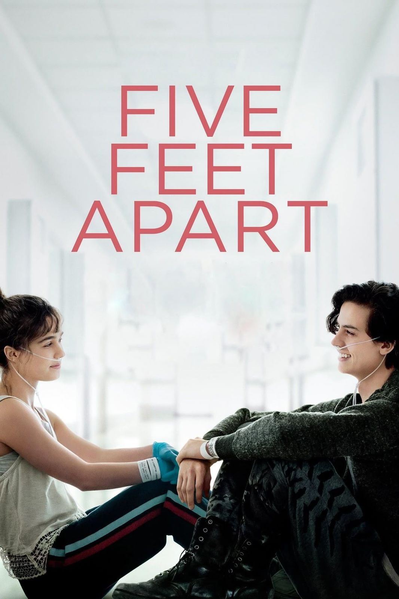

A continuación, encontrarás reseñas de tus películas favoritas
y enlaces para que las veas.
Yo antes de ti
Louisa “Lou” Clark es una joven alegre y peculiar que acepta trabajar
como cuidadora de Will Traynor, un exitoso banquero que quedó tetrapléjico
tras un accidente. A medida que Louisa intenta mostrarle a Will que la vida
aún vale la pena, ambos desarrollan una conexión profunda que cambiará sus
vidas para siempre.
Trailer de la Pelicula
Violet y Finch
Violet y Finch son dos adolescentes que luchan con traumas personales.
Violet intenta superar la muerte de su hermana, mientras que Finch enfrenta
problemas de salud mental. Juntos, emprenden un viaje emocional que les
ayuda a sanar y a descubrir los pequeños momentos que hacen que la vida valga la pena.
Trailer de la Película
A dos metros de ti
Stella y Will son dos adolescentes con fibrosis quística que deben mantenerse
a una distancia segura para evitar infecciones cruzadas. A pesar de las
restricciones, desarrollan una conexión especial que desafía las normas médicas
y les enseña el valor del amor y la esperanza.